Vision Based Navigation
Computer Vision Group - TUM
Practical Course: Vision Based Navigation
Lecture 3: Keypoint Detection, Matching and Motion Estimation
Mateo de Mayo, Jason Chui, Jonathan Eichhorn
Prof. Dr. Daniel Cremers

Version: 01.04.2026
Topics Covered
- Keypoint detection
- Corner detection
- Blob detection
- Rotation estimation
- Scale selection
- Keypoint description
- Scale-Invariant Feature Transform (SIFT)
- Binary Features: BRIEF, ORB
- Keypoint matching
- Robust model fitting with RANSAC
- Epipolar constraint
- Keypoint-based motion estimation
- Place recognition with bag of words
Local Features
Keypoint Detection
Desirable properties of keypoint detectors for visual SLAM / SfM:
- High repeatability
- Localization accuracy
- Robustness
- Invariance
- Computational efficiency
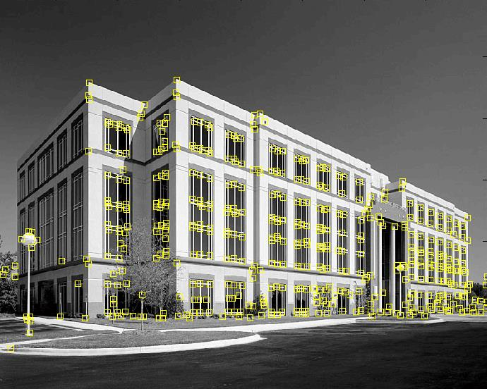
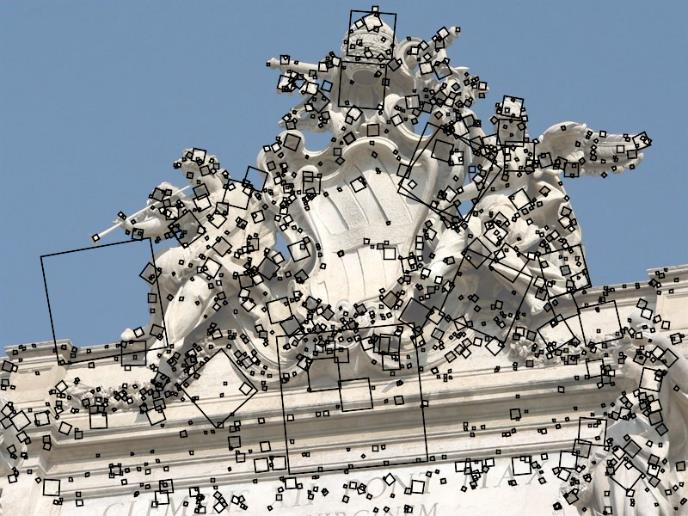
Keypoint Matching
Desirable properties of feature matching for visual SLAM / SfM:
- High recall
- Precision
- Robustness
- Computational efficiency
- One possible approach to keypoint matching: by descriptor

Local Feature Descriptors
- Desirable properties for SLAM / SfM: distinctiveness, robustness, invariance
- Extract signatures that describe local image regions, examples:
- Histograms over image gradients (SIFT)
- Histograms over Haar-wavelet responses (SURF)
- Binary patterns (BRIEF, BRISK, FREAK, etc.)
- Learning-based descriptors (f.e. Calonder et al., ECCV 2008)
- Rotation-invariance: Align with dominant orientation in local region
- Scale-invariance: Adapt described region extent to keypoint scale
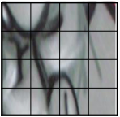
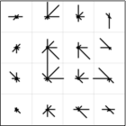
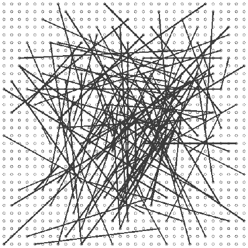
Image source: Svetlana Lazebnik / Calonder et al., ECCV 2010.
Image Matching 1/2
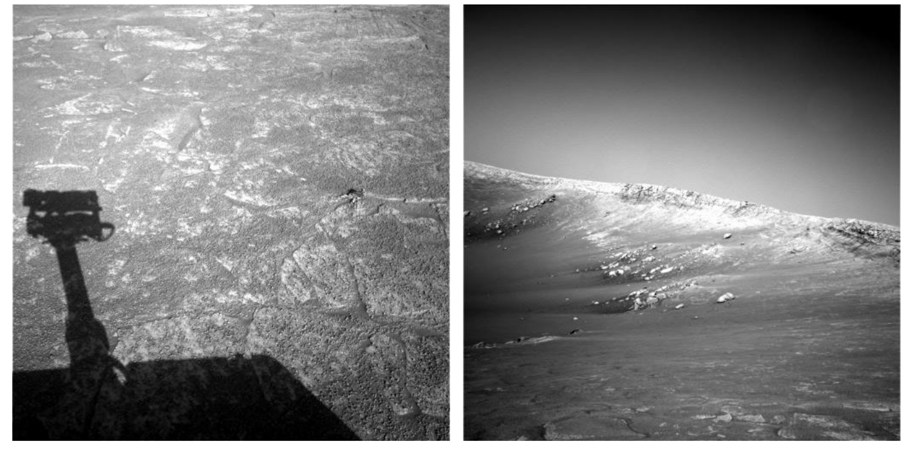
Image Matching 2/2
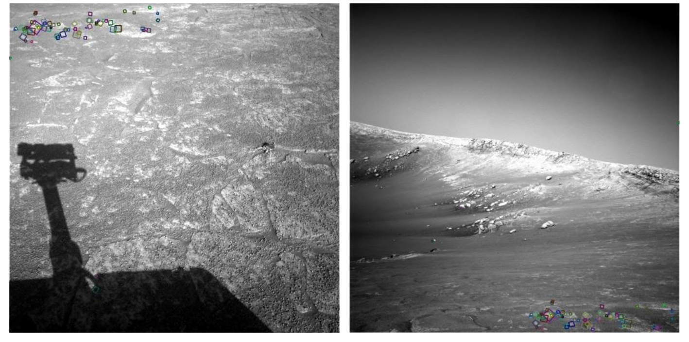
Invariant Local Features
Find features that are invariant to transformations
- geometric invariance: translation, rotation, scale
- photometric invariance: brightness, exposure, …
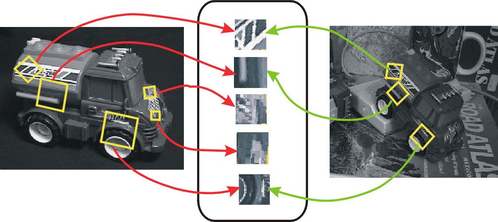
Advantages of Local Features
- Locality
- features are local, so robust to occlusion and clutter
- Distinctiveness
- can differentiate a large database of objects
- Quantity
- hundreds or thousands in a single image
- Efficiency
- real-time performance achievable
Section: Keypoint Detection
Local Measure of Uniqueness 1/3
Suppose we only consider a small window of pixels: What defines whether a feature is well localized and unique?
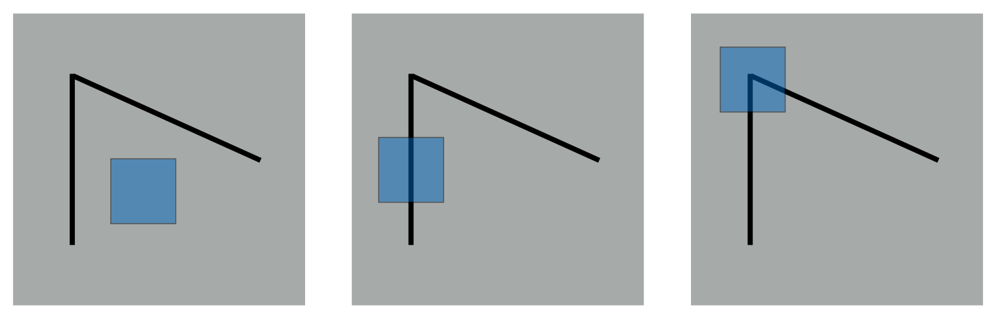
Local Measure of Uniqueness 2/3
How does the window change when you shift by a small amount?
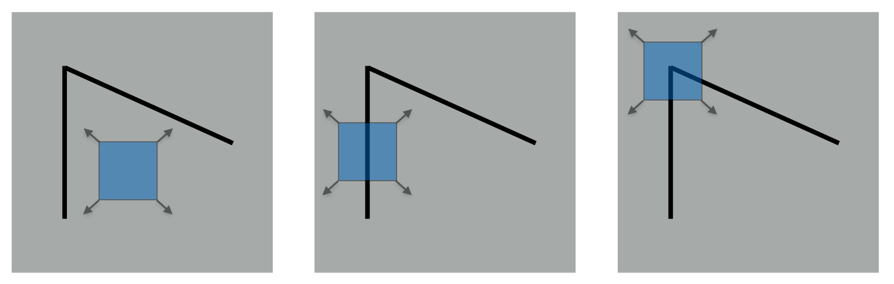
- “flat” region: no change in any directions
- “edge”: no change along the edge direction
- “corner”: significant change in all directions
Local Measure of Uniqueness 3/3
Define:
- \(E(u, v) =\) amount of change when you shift the window by \((u, v)\)
- \(E(u, v)\) is small for all shifts
- \(E(u, v)\) is small for some shifts
- \(E(u, v)\) is large for all shifts
What do we want \(\min_{u, v} E(u, v)\) to be?
Corner Detection
Consider shifting the window W by \((u, v)\)
- How do the pixels in \(W\) change?
- Compare each pixel before and after by Sum of Squared Differences (SSD)
- This defines an SSD “error”: \[E(u, v) = \sum_{(x,y) \in W} [I(x+u, y+v) - I(x, y)]^2\]
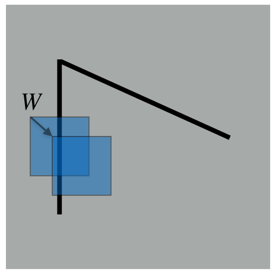
Corner Detection: Small Motion Assumption 1/3
Consider shifting the window W by \((u, v)\)
- How do the pixels in \(W\) change?
- Compare each pixel before and after by Sum of Squared Differences (SSD)
- This defines an SSD “error”: \[E(u, v) = \sum_{(x,y) \in W} [I(x+u, y+v) - I(x, y)]^2\]
Taylor Series expansion of \(I(x, y)\):
\[I(x+u, y+v) = I(x, y) + \frac{\partial I}{\partial x} u + \frac{\partial I}{\partial y} v + \text{higher order terms}\]
If the motion \((u, v)\) is small, then the first order approximation is good:
\[I(x+u, y+v) \approx I(x, y) + \frac{\partial I}{\partial x} u + \frac{\partial I}{\partial y} v = I(x, y) + (I_x I_y) \begin{pmatrix} u \\ v \end{pmatrix}\]
With \(I_x = \frac{\partial I}{\partial x}\) and \(I_y = \frac{\partial I}{\partial y}\)
Corner Detection: Small Motion Assumption 2/3
Consider shifting the window W by \((u, v)\)
How do the pixels in \(W\) change?
Compare each pixel before and after by Sum of Squared Differences (SSD)
This defines an SSD “error”: \[ \begin{aligned} E(u, v) &= \sum_{(x,y) \in W} [I(x+u, y+v) - I(x, y)]^2 \\ &\approx \sum_{(x,y) \in W} [(I(x, y) + (I_x I_y) \begin{pmatrix} u \\ v \end{pmatrix}) - I(x, y)]^2 \end{aligned} \]
\[I(x+u, y+v) \approx I(x, y) + \frac{\partial I}{\partial x} u + \frac{\partial I}{\partial y} v = I(x, y) + (I_x I_y) \begin{pmatrix} u \\ v \end{pmatrix}\]
With \(I_x = \frac{\partial I}{\partial x}\) and \(I_y = \frac{\partial I}{\partial y}\)
Corner Detection: Small Motion Assumption 3/3
Consider shifting the window W by \((u, v)\)
- How do the pixels in \(W\) change?
- Compare each pixel before and after by Sum of Squared Differences (SSD)
- This defines an SSD “error”: \[ \begin{aligned} E(u, v) &= \sum_{(x,y) \in W} [I(x+u, y+v) - I(x, y)]^2 \\ &\approx \sum_{(x,y) \in W} [(I(x, y) + (I_x I_y) \begin{pmatrix} u \\ v \end{pmatrix}) - I(x, y)]^2 \\ &= \sum_{(x,y) \in W} [(I_x I_y) \begin{pmatrix} u \\ v \end{pmatrix}]^2 \\ \end{aligned} \]
Corner Detection: Structure Tensor \(H\)
This can be rewritten:
\[ \begin{aligned} E(u, v) &\approx \sum_{(x,y) \in W} \begin{bmatrix} (I_x I_y) \begin{pmatrix} u \\ v \end{pmatrix} \end{bmatrix}^2 \\ &= \sum_{(x,y) \in W} (u, v) \underbrace{\begin{pmatrix} I_x^2 & I_x I_y \\ I_x I_y & I_y^2 \end{pmatrix}}_{\text{"structure tensor" $H$}} \begin{pmatrix} u \\ v \end{pmatrix} \\ \end{aligned} \]
For the example above:
- You can move the center of the window to anywhere on the blue unit circle
- Which directions will result in the largest and smallest \(E\) values?
- We can find these directions by looking at the eigenvectors of \(H\)
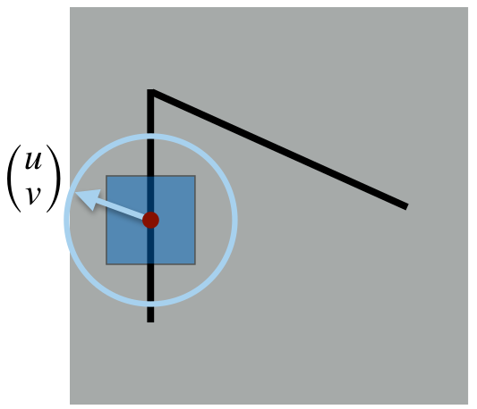
Corner Detection: Eigenvalues of \(H\)
This can be rewritten:
\[ \begin{aligned} E(u, v) &\approx \sum_{(x,y) \in W} \begin{bmatrix} (I_x I_y) \begin{pmatrix} u \\ v \end{pmatrix} \end{bmatrix}^2 \\ &= \sum_{(x,y) \in W} (u, v) \underbrace{\begin{pmatrix} I_x^2 & I_x I_y \\ I_x I_y & I_y^2 \end{pmatrix}}_{\text{"structure tensor" $H$}} \begin{pmatrix} u \\ v \end{pmatrix} \\ \end{aligned} \]
Eigenvalues and eigenvectors of \(H\)
- Define shifts with the smallest and largest change (\(E\) value)
- \(x_+\): direction of largest increase in \(E\)
- \(\lambda_+\): amount of increase in direction \(x_+\)
- \(x_-\): direction of smallest increase in \(E\)
- \(\lambda_-\): amount of increase in direction \(x_-\)
- \(H x_+ = \lambda_+ x_+\) and \(H x_- = \lambda_- x_-\)
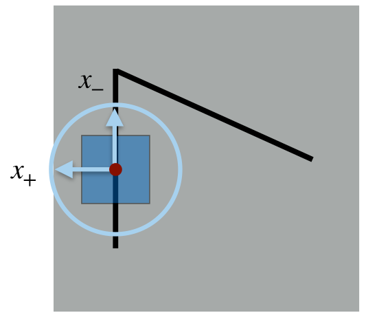
Corner Detection
Define:
- \(E(u, v) =\) amount of change when you shift the window by \((u, v)\)
- \(E(u, v)\) is small for all shifts
- \(E(u, v)\) is small for some shifts
- \(E(u, v)\) is large for all shifts
We want \(\min_{u, v} E(u, v)\) to be large, i.e., maximize \(\lambda_-\)
Corner Detection Recipe 1/2
- Compute the gradient at each point in the image.
- Create the \(H\) matrix from the entries in the gradient.
- Compute the eigenvalues.
- Find points with large response (\(\lambda_-\) > threshold).
- Choose those points where \(\lambda_-\) is a local maximum as features.
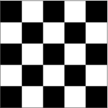
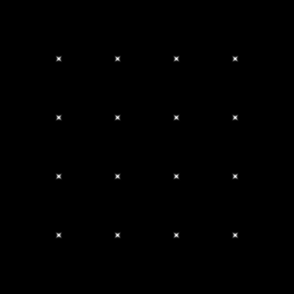
Corner Detection Recipe 2/2
- Compute the gradient at each point in the image.
- Create the \(H\) matrix from the entries in the gradient.
- Compute the eigenvalues.
- Find points with large response (\(\lambda_-\) > threshold).
- Choose those points where \(\lambda_-\) is a local maximum as features.
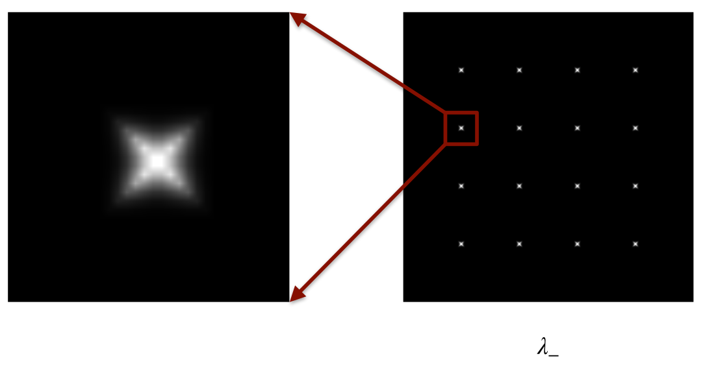
Corner Detection: Harris Operator
- Thresholding \(\lambda_-\) is also known as “Shi-Tomasi corners” or “Good Features to Track” (Shi & Tomasi, CVPR 1994)
- This is a variant of the “Harris operator” for corner detection: \[f = \frac{\lambda_+ \lambda_-}{\lambda_+ + \lambda_-} = \frac{\det(H)}{\text{trace}(H)}\]
- The trace is the sum of the diagonals, i.e., \(trace(H) = h_{11} + h_{22} = I_x^2 + I_y^2\)
- Very similar to \(\lambda_-\), but less expensive (no square root).
- Called the “Harris Corner Detector” or “Harris Operator” (Harris and Stephens, AVC 1988)
- Lots of other detectors, this is one of the most popular
Corner Detection: Harris Operator vs Shi Tomasi
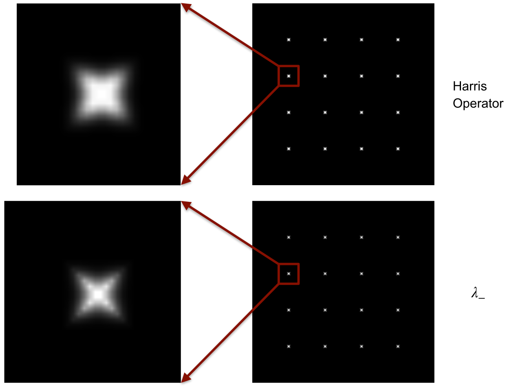
Harris Detector Example 1/5
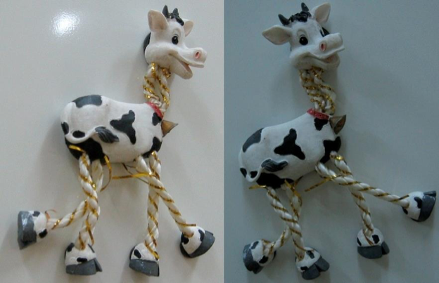
Harris Detector Example 2/5
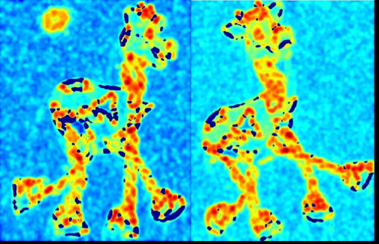
Harris Detector Example 3/5
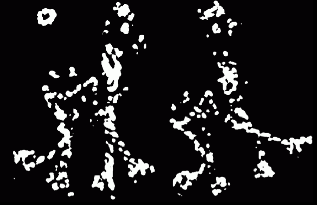
Harris Detector Example 4/5
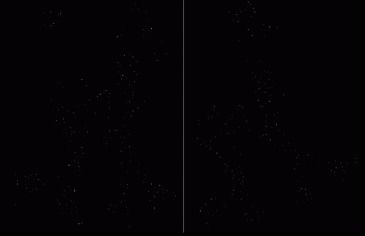
Harris Detector Example 5/5
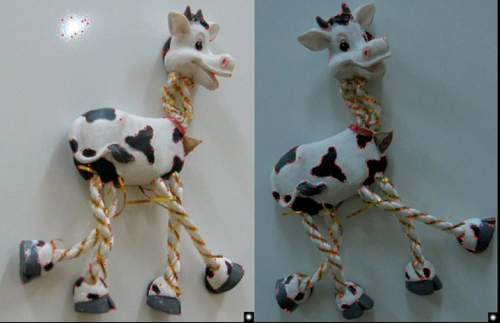
FAST Detector
- Features from Accelerated Segment Test
- Check relation of brightness values to center pixel along circle
- Specific number of contiguous pixels brighter or darker than center
- Very fast corner detection
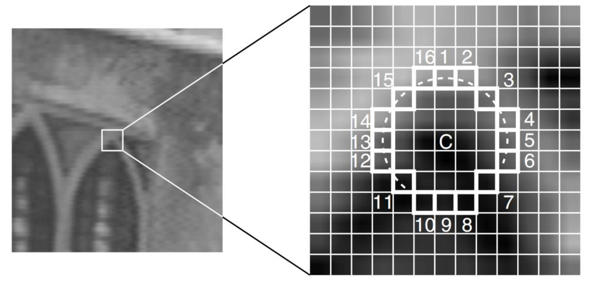
Section: Keypoint Descriptors
Keypoint Descriptors
- We know how to detect good points.
- Next question: How to match them?
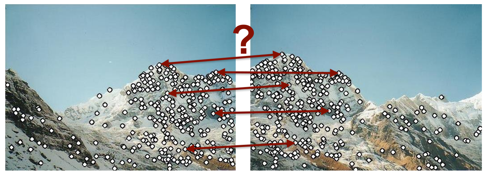
- Idea: extract distinctive descriptor vector from a local patch around the keypoint.
Invariance 1/2
- Goal: match keypoints regardless of image transformation.
- This is called transformational invariance.
- Most keypoint detection and description methods are designed to be
invariant to:
- Translation, 2D rotation, scale
- They can usually also handle:
- Limited 3D rotations (SIFT works up to about 60 degrees)
- Limited affine transformations (some are fully affine invariant)
- Limited illumination/contrast changes
Invariance 2/2
- Make sure your detector is invariant.
- Harris is invariant to translation and rotation.
- Scale is trickier:
- Image pyramids
- Scale selection for blobs (f.e. SIFT)
- Keypoints at multiple scales for same location
- Design an invariant feature descriptor
- A descriptor captures the information in a region around the detected feature point.
- The simplest descriptor: a square window of pixels
- What’s this invariant to?
- Let’s look at some better approaches…
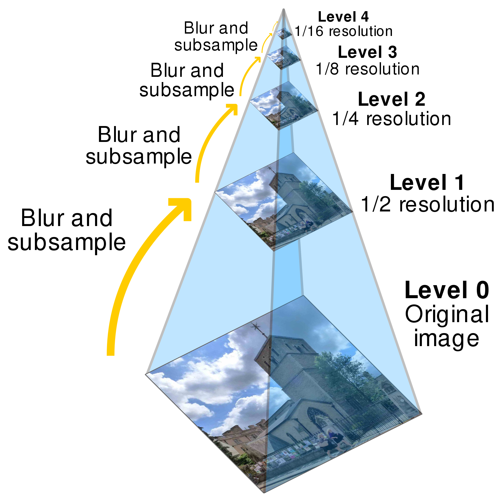
2D Rotation Invariance
- Idea: align the descriptor with a dominant 2D orientation
- Some possible approaches:
- Use the eigenvector of H corresponding to larger eigenvalue
- Use intensity centroid (ORB)
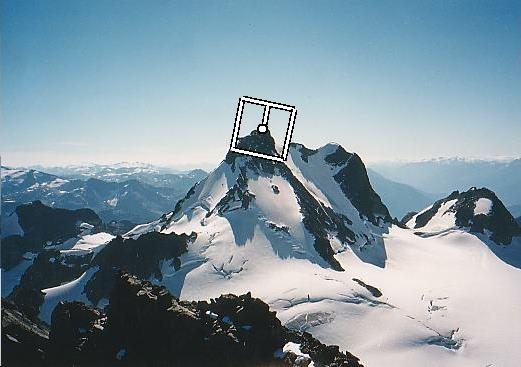
2D Rotation Invariance: SIFT
- Take 16x16 square window around detected feature
- Compute edge orientation (angle of the gradient) for each pixel
- Throw out weak edges (threshold gradient magnitude)
- Create histogram of surviving edge orientations
- Select strong local orientation maxima and create one or more descriptors
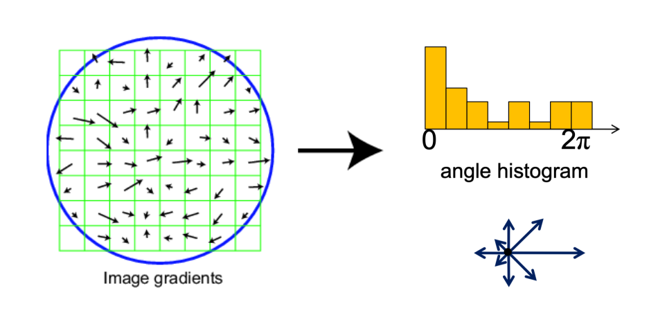
SIFT Descriptor
- Divide the 16x16 window into a 4x4 grid of cells (2x2 case shown below)
- Compute an orientation histogram for each cell
- 16 cells * 8 orientations = 128 dimensional descriptor
- Many important details, e.g.,
- Trilinear interpolation for binning: viewpoing invariance
- Descriptor normalization: brightness invariance
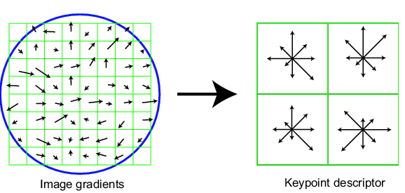
Properties of SIFT
- “Scale-Invariant Feature Transform” (Lowe, IJCV 2004)
- Can handle changes in viewpoint
- Up to about 60 degrees out of plane rotation
- Can handle significant changes in illumination
- Sometimes even day vs. night
- Fast and efficient: can run in real time (but still costly)
- Lots of code available, CPU, GPU, … (US patent recently expired)
- Many alternatives since (SURF, KAZE, learning-based, …), but still popular.
- But: false positive matches still possible
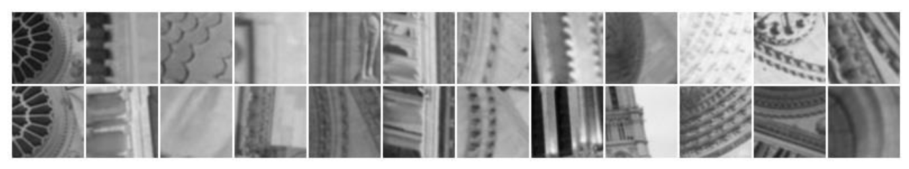
Binary Descriptors: BRIEF
“Binary Robust Independent Elementary Features” (Calonder et al. ECCV 2010)
Binary descriptor from intensity comparisons at sample positions
Very efficient to compute
Fast matching distance through Hamming distance (xor and popcount CPU instructions)
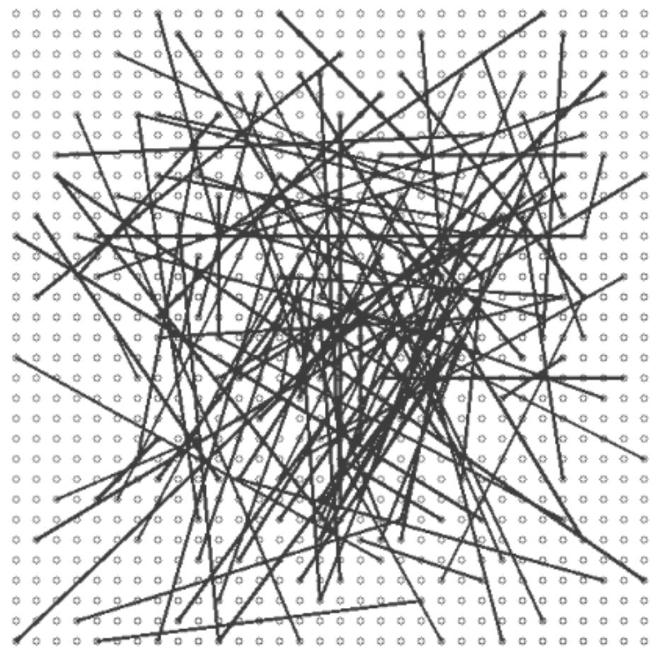
Binary Descriptors: ORB
“Oriented Fast and Rotated BRIEF” (Rublee et al. ICCV 2011)
Combination of FAST detector and BRIEF descriptor
Rotation-invariant BRIEF: Estimate dominant orientation from patch moments (intensity centroid)
Improved binary pattern
Very popular for SLAM / VO
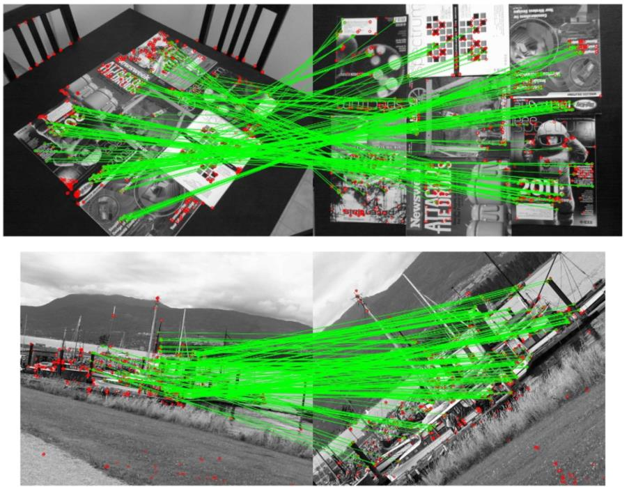
Section: Keypoint Matching
Keypoint Matching
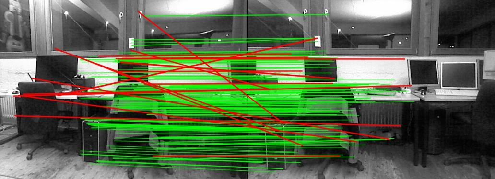
- Main idea: Match keypoints with similar descriptors
Matching Distance 1/2
- How to define the difference between two descriptors \(f_1\), \(f_2\)?
- Simple approach is to assign keypoints with minimal sum of square differences \(SSD(f_1, f_2)\) between entries of the two descriptors
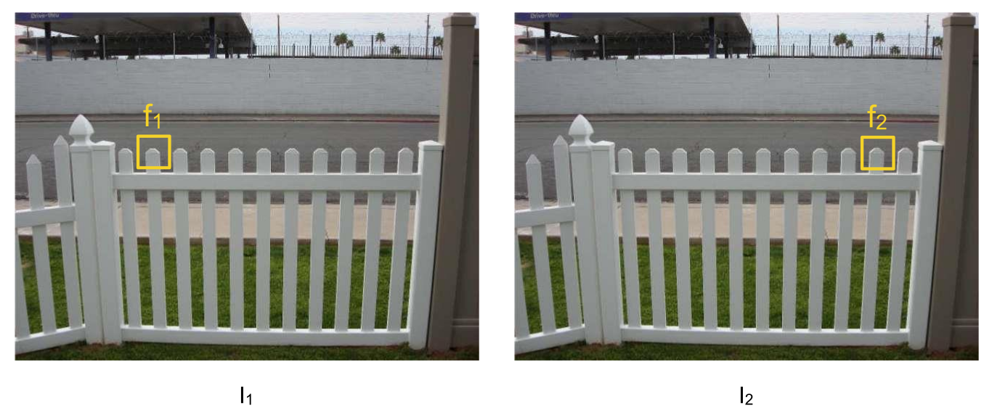
Matching Distance 2/2
- Better approach: best to second best ratio distance: \(\frac{SSD(f_1, f_2)}{SSD(f_1, f'_2)}\)
- \(f_2\) is best SSD match to \(f_1\) in \(I_2\)
- \(f'_2\) is second best SSD match to \(f_1\) in \(I_2\)
- Match should be “unique”
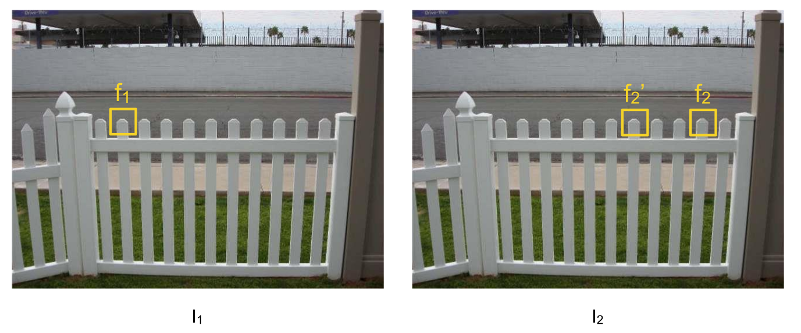
Eliminating Bad Matches
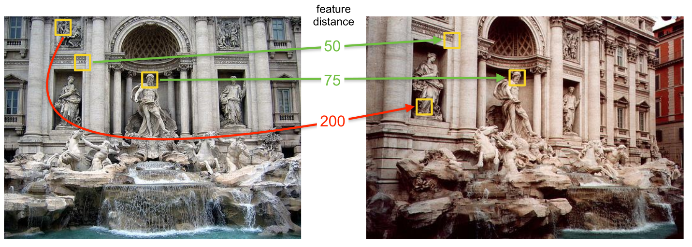
- Only accept matches with distance smaller a threshold.
- How to choose the threshold?
True/False Positives
- Choice of threshold affects performance
- Too restrictive: less false positives, but also less true positives
- Too lax: more true positives, but also more false positives
- Can we do more? Yes: Robust model fitting with RANSAC!
Random Sample Consensus (RANSAC): Intro
- Model fitting in presence of noise and outliers
- Example: fitting a line through 2D points
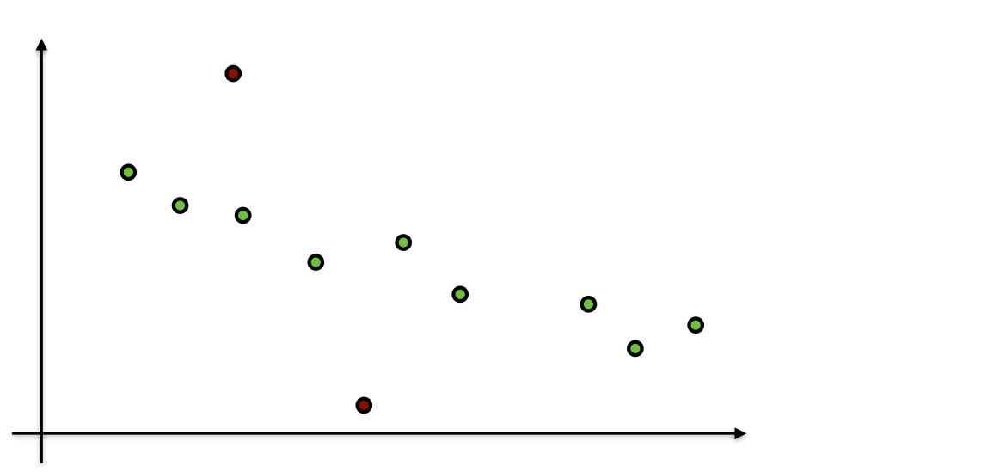
Random Sample Consensus (RANSAC): Least Squares
- Least-squares solution, assuming constant noise for all points
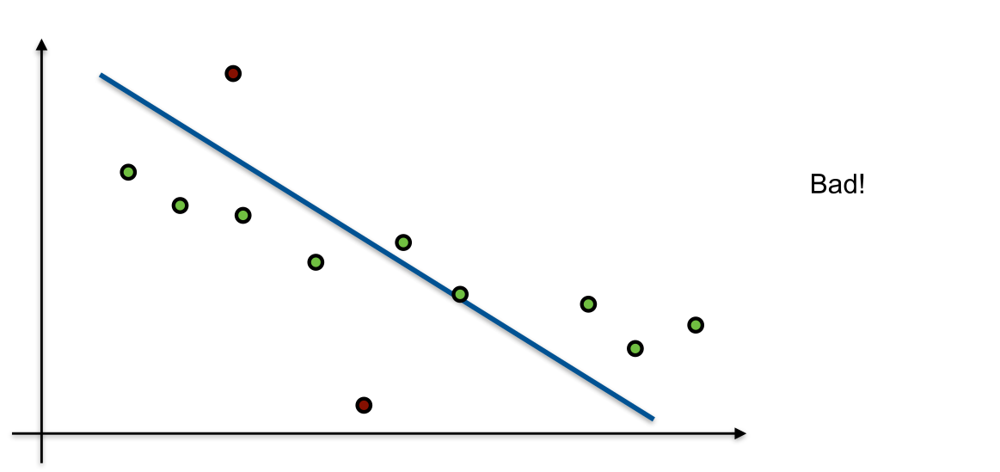
Random Sample Consensus (RANSAC): One Random Sample
- We only need 2 points to fit a line. Let’s try 2 random points.
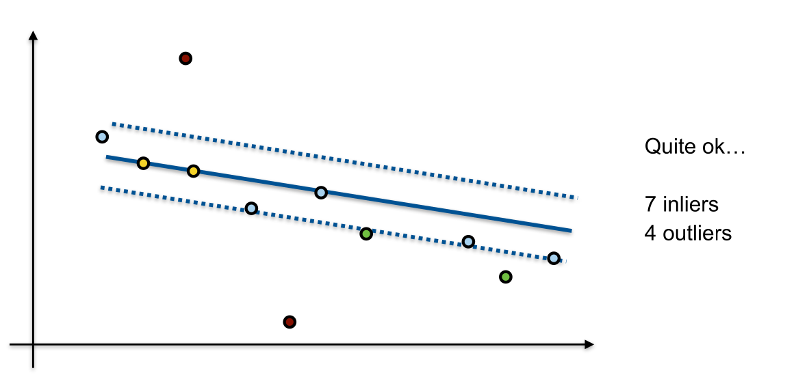
Random Sample Consensus (RANSAC): Second Random Sample
Let’s try 2 other random points again.
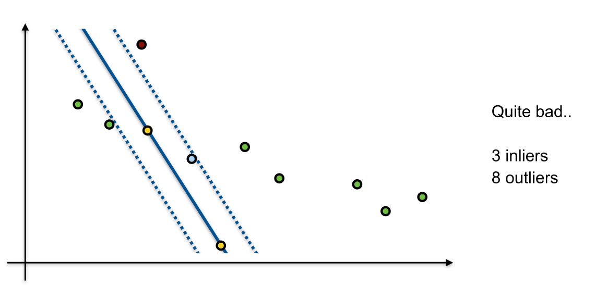
Random Sample Consensus (RANSAC): Third Random Sample
- And again.
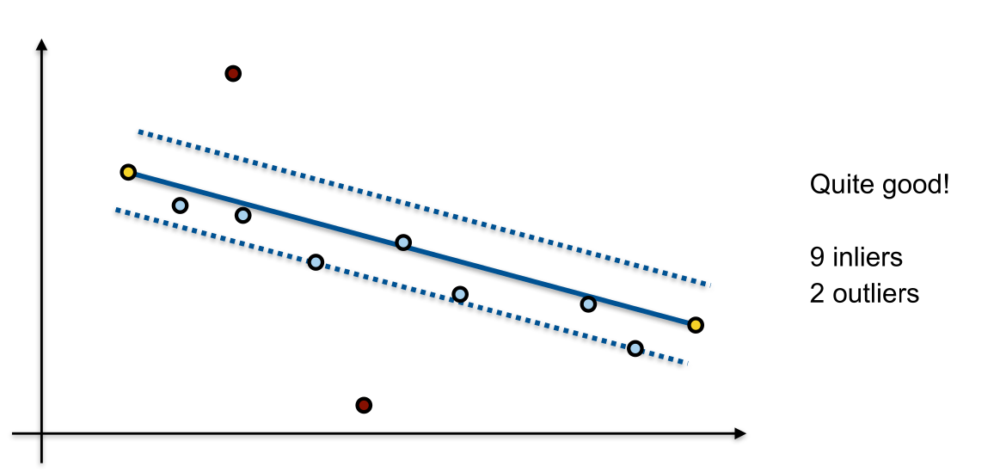
Random Sample Consensus (RANSAC): Refine solution
- Let’s use the inliers of the best trial so far to perform least squares fitting.
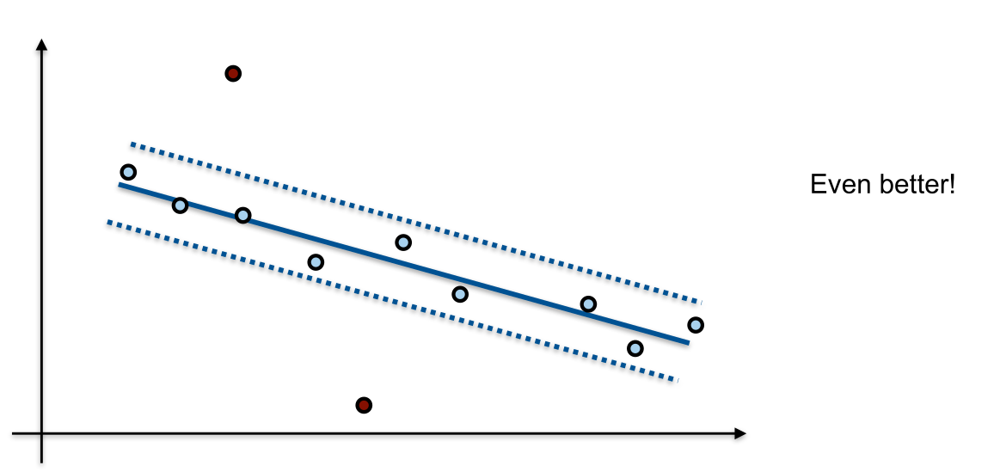
RANSAC Algorithm
RANdom SAmple Consensus algorithm formalizes this idea
Algorithm:
- Input: data \(D\), min. required #data points for fitting \(s\), success probability \(p\), outlier ratio \(\epsilon\)
- Output: inlier set
- Compute required number of iterations \[\boxed{N = \frac{\log(1-p)}{\log(1-(1-\epsilon)^s)}}\]
- For \(N\) iterations do:
- Randomly select a subset of \(s\) data points
- Fit model on the subset
- Count inliers and keep model/subset with largest number of inliers
- Refit model using found inlier set
RANSAC Number of Iterations
- \(s\): Required data points for fitting the model
- \(p\): Success probability
- \(\epsilon\): Outlier ratio
- \(N\): Number of iterations needed
\[\boxed{N = \frac{\log(1-p)}{\log(1-(1-\epsilon)^s)}}\]
For example, these are the \(N\) needed for reaching \(p = 0.99\)
| Model | Points \(s\quad\epsilon=\) | 10% | 20% | 30% | 40% | 50% | 60% | 70% |
|---|---|---|---|---|---|---|---|---|
| Line | 2 | 3 | 5 | 7 | 11 | 17 | 27 | 49 |
| Plane | 3 | 4 | 7 | 11 | 19 | 35 | 70 | 169 |
| Essential Matrix | 8 | 9 | 26 | 78 | 272 | 1177 | 7025 | 70188 |
Note: this was recently (2025) improved by Schönberger, Larson, Pollefeys in Fixing the RANSAC Stopping Criterion.
Epipolar Constraint
Epipolar Constraint on the Image Plane
- The epipolar constraint can be computed for a pair of matched 2D image points when the relative camera pose is known, here encoded by \(R,T\) (e.g. stereo pair)
- The epipolar plane is spanned by \(\mathbf{x}_L\) and the two camera centers \(O_L\) and \(O_R\)
- The epipolar line is the intersection of the epipolar plane and the right image plane
- The epipolar constraint encodes that \(\mathbf{x}_R\) must lie on the epipolar line in the right image \[\boxed{\mathbf{x}_R^T \hat{T} R \mathbf{x}_L = 0}\]
- \(E = \hat{T} R\) is called the Essential Matrix
- Note that the epipolar constraint is not sufficient to guarantee a correct match. A wrong match may still lie elsewhere on the epipolar line. However, in many cases outliers can be correctly filtered.
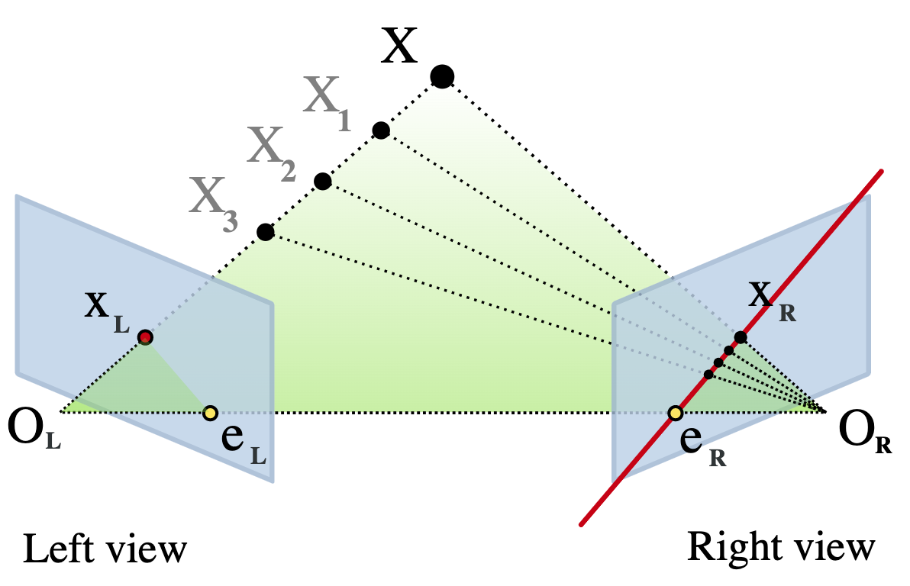
Epipolar Constraint on the Image Plane: Visualization
Go to the visualization page: https://mateosss.github.io/assets/visnav/epipolar-geometry.html
Epipolar Constraint on a Sphere
- Epipolar constraint is also possible in 3D with unit-vectors.
- Epipolar line generalises to epipolar curve.
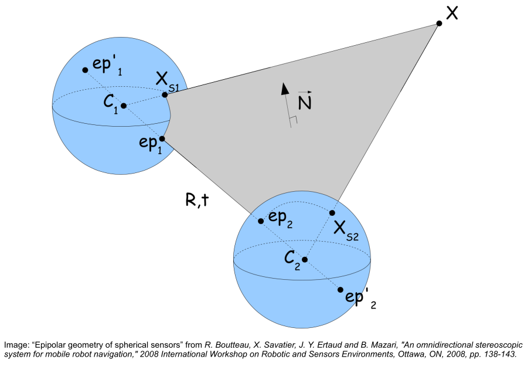
Motion Estimation
Motion Estimation from Point Correspondences
2D-to-2D
Reprojection error: \[E(\mathbf{T}_{ba}, \mathscr{X}) = \sum_{i=1}^N \| \mathbf{y}_{a,i} - \pi(\mathbf{X}_i)\|^2 + \| \mathbf{y}_{b,i} - \pi(\mathbf{T}_{ba} \mathbf{X}_i)\|^2\]
Linear Algorithm: 8-point, 5-point
2D-to-3D
Reprojection error: \[E(\mathbf{T}_{wa}, \mathscr{X}) = \sum_{i=1}^N \| \mathbf{y}_{a,i} - \pi(\mathbf{T}_{wa}^{-1} \mathbf{X}_i)\|^2\]
Linear Algorithm: DLT PnP
3D-to-3D
3D geometric error: \[E(\mathbf{T}_{ab}) = \sum_{i=1}^N \| \mathbf{Y}_{a,i} - \mathbf{T}_{ab} \mathbf{Y}_{b,i}\|^2\]
Linear Algorithm: Arun, Horn
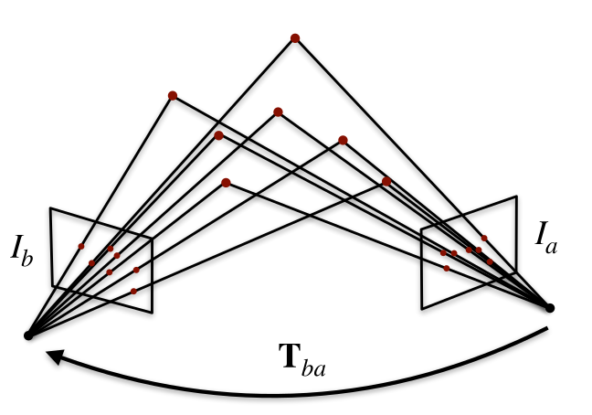
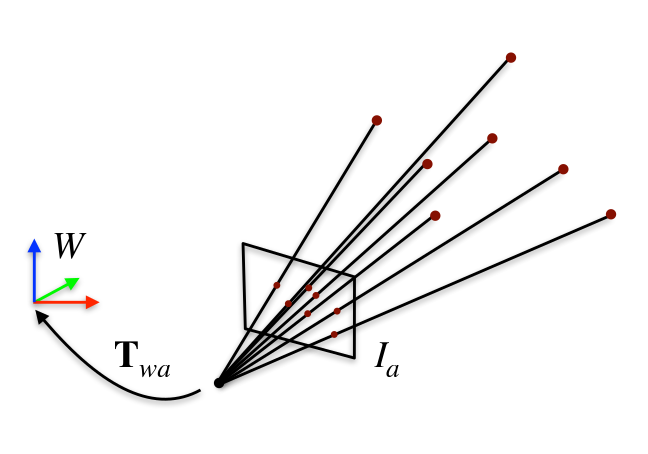
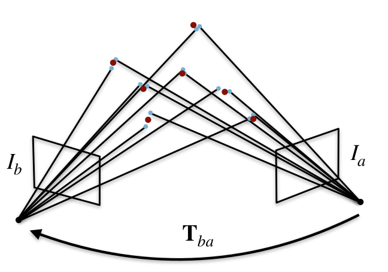
2D-to-2D Motion Estimation
Given corresponding image point observations \[\mathscr{Y}_a = \{\mathbf{y}_{a,1}, \ldots, \mathbf{y}_{a,N}\}\] \[\mathscr{Y}_b = \{\mathbf{y}_{b,1}, \ldots, \mathbf{y}_{b,N}\}\] of unknown 3D points \(\mathscr{X} = \{\mathbf{X}_1, \ldots, \mathbf{X}_N\}\) (expressed in camera frame \(a\)) determine relative motion \(\mathbf{T}_{ba}\) between the frames
Reprojection Error (Bundle Adjustment): \[\boxed{E(\mathbf{T}_{ba}, \mathscr{X}) = \sum_{i=1}^N \| \mathbf{y}_{a,i} - \pi(\mathbf{X}_i)\|^2 + \| \mathbf{y}_{b,i} - \pi(\mathbf{T}_{ba} \mathbf{X}_i)\|^2}\] Non-linear optimization requires good initialization. Non-convex, non-unique (scale ambiguity).
Algebraic approach based on epipolar geometry to recover relative pose (up to scale) without explicitly recovering 3D point location: 8-point, 5-point algorithm
Applications:
- Filtering pairwise feature matches with RANSAC
- Monocular SLAM / SfM initialisation
2D-to-3D Motion Estimation
Given a set of 3D points in world frame \(W\) \[\mathscr{X} = \{\mathbf{X}_1, \ldots, \mathbf{X}_N\}\] and corresponding image observations \[\mathscr{Y}_a = \{\mathbf{y}_{a,1}, \ldots, \mathbf{y}_{a,N}\}\] determine camera pose \(\mathbf{T}_{wa}\) in world frame
Reprojection Error (Pose-only Bundle Adjustment): \[\boxed{E(\mathbf{T}_{wa}, \mathscr{X}) = \sum_{i=1}^N \| \mathbf{y}_{a,i} - \pi(\mathbf{T}_{wa}^{-1} \mathbf{X}_i)\|^2}\]
Non-linear optimization requires good initialization. Non-convex.
- A.k.a. Perspective-n-Points (PnP) problem, many approaches exist,
e.g.
- Direct linear transform (DLT)
- EPnP (Lepetit et al., An accurate O(n) Solution to the PnP problem, IJCV 2009)
- OPnP (Zheng et al., Revisiting the PnP Problem: A Fast, General and Optimal Solution, ICCV 2013)
- Applications:
- Localize camera in local keypoint map (with RANSAC)
3D-to-3D Motion Estimation
Given corresponding 3D points in two camera frames \[\mathscr{Y}_a = \{\mathbf{Y}_{a,1}, \ldots, \mathbf{Y}_{a,N}\}\] \[\mathscr{Y}_b = \{\mathbf{Y}_{b,1}, \ldots, \mathbf{Y}_{b,N}\}\] determine the relative camera pose \(\mathbf{T}_{ab}\)
3D geometric error: \[\boxed{E(\mathbf{T}_{ab}) = \sum_{i=1}^N \| \mathbf{Y}_{a,i} - \mathbf{T}_{ab} \mathbf{Y}_{b,i}\|^2}\] Corresponds to least-squares point cloud alignment.
- Closed-form solutions available, e.g. Arun et al., 1987
- Applications:
- Relative pose for calibrated stereo cameras (triangulation of 3D points) or RGB-D cameras (measured depth)
- Loop-closure correction (variant with scale estimate available for monocular SLAM)
Place Recognition
Place Recognition with Bag of Words
- Place recognition aims to find similar images to a given query image
- SfM: Which images to match?
- SLAM: Detect loops
- Idea: Discretize the feature-descriptor space by hierarchical
clustering in a “vocabulary tree”
- visual “words” correspond to leaf-nodes
- words are weighted by distinctiveness: e.g. “inverse document frequency” \(\log(N/N_i)\)
- Image comparison:
- each feature is assigned to a word by passing it down the tree
- for an image, count occurrence of each word (“term frequency”): bag-of-words vector
- to compare images, compute the distance of (normalized) bag-of-words vectors
- close bag-of-words vectors correspond to potentially similar images
- Vocabulary tree and weights are built offline from large collection of features
- False positives possible: Combine with geometric, temporal, … consistency checks
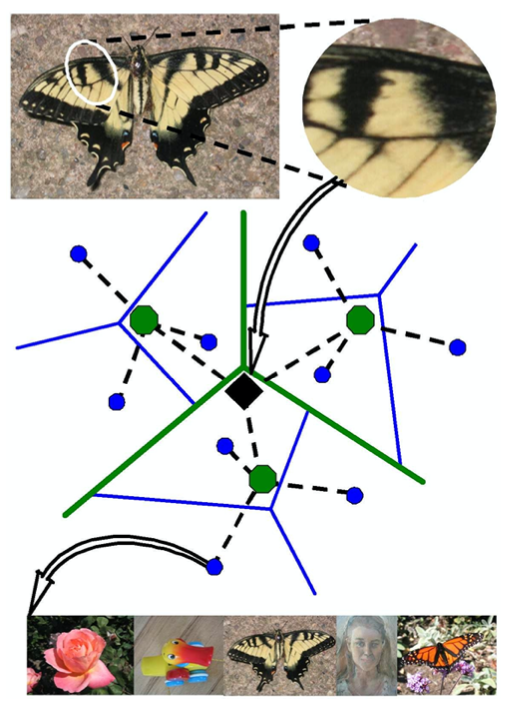
Efficient Query and Feature Matching
- Image query with “inverse index”:
- For each word store list of images, and for each image cache the word count.
- During query, consider only images from the inverse index of each word
- Efficient BoW distance (scoring):
- BoW vectors are sparse (most entries are 0)
- For normalised vectors, use \[\| \mathbf{q} - \mathbf{d} \|_p^p = 2 + \sum_{i | q_i \neq 0, d_i \neq 0} |q_i - d_i|^p - |q_i|^p - |d_i|^p\]
- L1-norm is often used (\(p = 1\))
- Approximate nearest neighbour feature matching using “direct index”
- For each image, store occurrence of nodes at each tree level and list of corresponding features
- When matching images, only consider features from direct image at given level
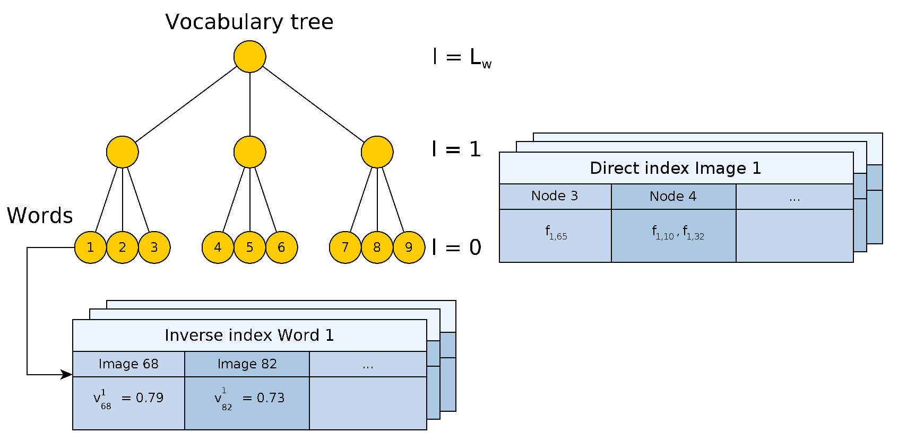
Lessons Learned
- Keypoint detection, description and matching is a well researched topic
- Highly performant corner and blob detectors exist
- Descriptors can be invariant to translation, rotation, scale, viewpoint, brightness, … (e.g. SIFT)
- Binary descriptors are highly efficient and effective (e.g. ORB) and thus popular for real-time
- Keypoint matching by descriptor distance; uniqueness ensured by ratio-to-second-best
- Robust matching based on model fitting using RANSAC
- Motion estimation from 2D-to-2D, 2D-to-3D, 3D-to-3D matches
- Image retrieval and loop-closure detection with bag-of-words
Exercise Sheet 3
In the third exercise sheet you will:
- Implement rotation estimation and descriptor matching for a simple variant of ORB.
- Filter inlier matches for stereo pairs using the epipolar constraint.
- Filter inlier matches for arbitrary pairs using RANSAC with the 5-point algorithm.
- Implement bag-of-words for efficient image retrieval using an inverse index.
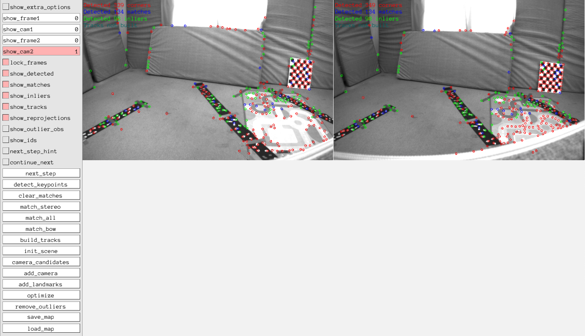